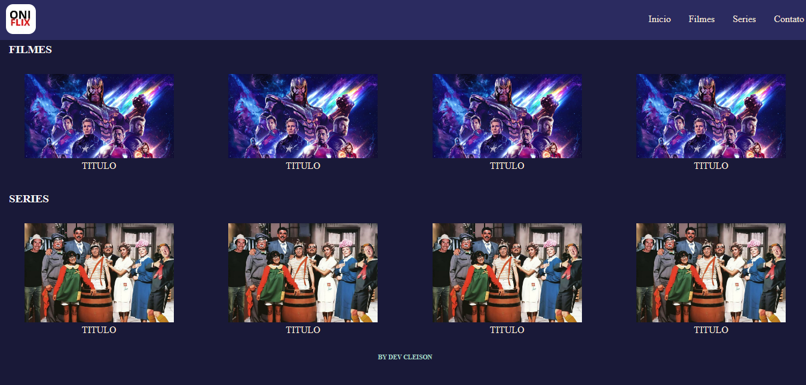
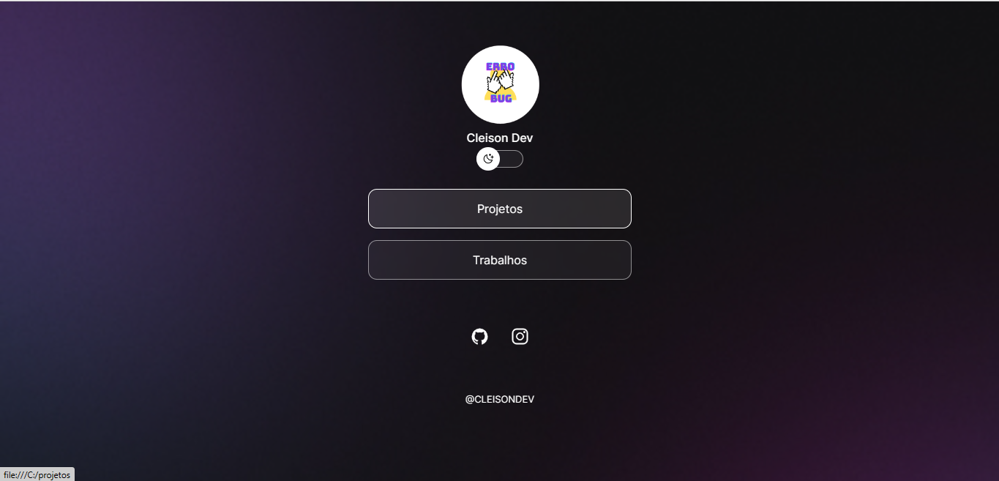
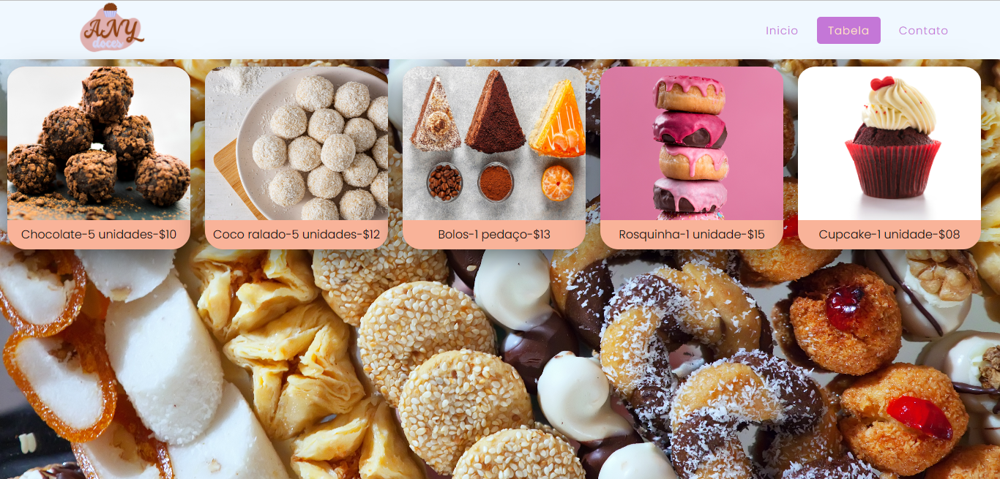

Oniflix-projeto fronendt desenvolvildo aproximadamente 2 meses;foi bastante desafiador pois foi bem no ínicio dos meus estudos afundo do fullstack.
Portifolio-projeto frontend, originalmente a ideia foi baseada no portifolio da Rocketseat, mudei um pouco a ideia e criei um site fullstack.
VENDA DE DOCES-projeto frontend, com duraçâo de 1 mês para ser produzido, o foco foi montar um servidor com NodeJS, onde meu primeiro esquema de servidor foi criado.
